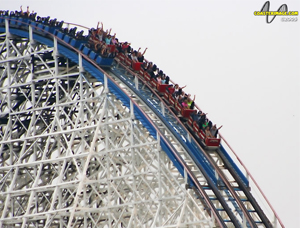

THE AMERICAN EAGLE
<<< back to SIX FLAGS GREAT AMERICA
SPECS
Max Height: 127 ft.
Max Speed: 66 mph
Inversions: 0
Duration: 2 min. 23 sec.
Manufacturer: Intamin AG
REIVEW
When the American Eagle was created in 1981, it set industry standards for several years. To this day, it is a fan favorite for many people. It is a long ride, with a huge helix, but I’ve always thought that the ride took up too much space in the park. Compared to Viper, another out and back wooden ride, the American Eagle is much larger, but in terms of airtime and the fun wooden coaster experience, it falls short. Now of course, without the American Eagle, Viper wouldn’t be here, so we can’t completely bash this oldie. Pretty bumpy, but nothing too bad like some wooden rides out there. Good ride, but not great.